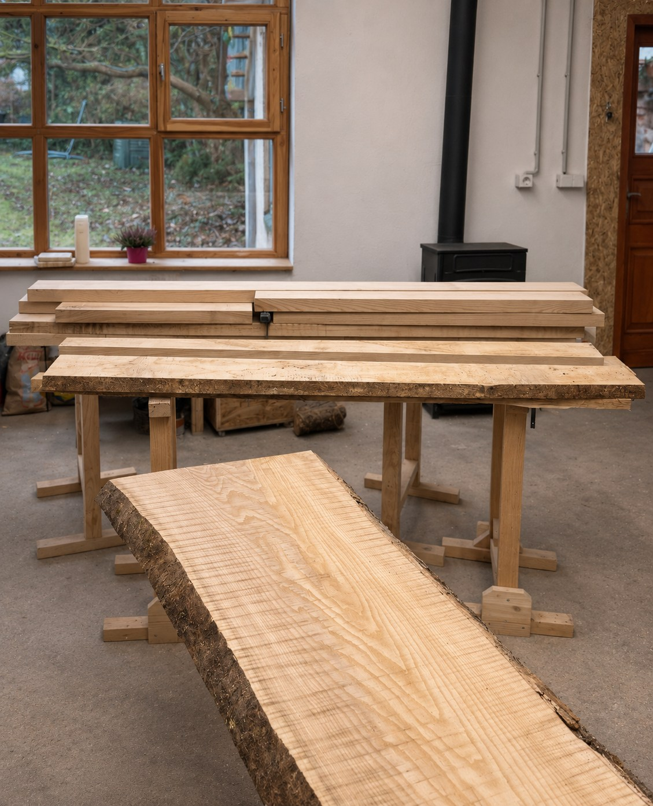
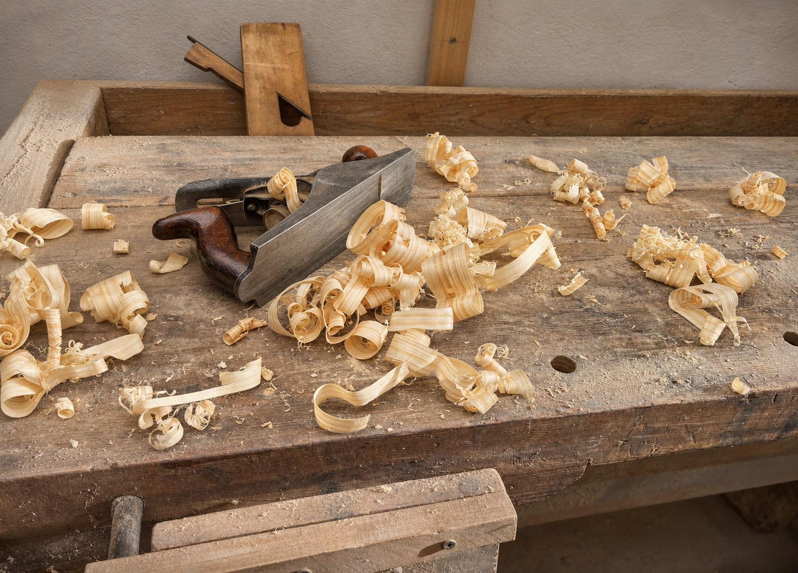

O stodole
Přečtěte si, jak jsem se dostal k truhlařině, kde moje výrobky vznikají a co je pro mě při práci a spolupráci se zákazníky důležité.
Cesta k řemeslu
Moje cesta k řemeslu nebyla vůbec přímočará. Vystudoval jsem střední a pak vysokou školu, protože kdo má ve škole dobré známky, ten se k řemeslu nedostane. Za samozřejmost se považuje, že člověk bude nosit košili, pracovat v kanceláři a živit se hlavou. A to je i můj příběh. Po škole jsem začal pracovat ve velké společnosti a postupně se na kariérním žebříčku propracovával stále výš, řešil jsem složité úkoly, rozhodoval, tvářil se důležitě. Měl jsem ale stále silnější pocit, že výsledky své práce nevidím, nemohu si na ně sáhnout, žiji v bublině a něco mi chybí.
Práci se dřevem jsem měl vždycky rád. Na to, co vyrobíte, si můžete hned sáhnout. Vidíte, že se výrobek lidem líbí a slouží jim, nebo naopak že se rozpadl, protože jste něco udělali špatně. Je to vidět hned a za nic se neschováte. Začal jsem výrobou drobností ze dřeva, třeba krájecích prkének jako dárků pro rodinu a přátele. Později jsem vyráběl i postele, stoly nebo knihovny. Časem se ze zábavy stala vášeň a bylo potřeba si doplnit i formální vzdělání. Vyučil jsem se tedy truhlářem a nakonec dal i sbohem práci v korporátu.
Stal jsem se tedy živnostníkem, truhlářem.
Jak pracuji
Materiál
Pracuji s poctivým masivním dřevem.
Spolupráce
Důležité jsou pro mě osobní kontakt se zákazníkem a osobní domluva. Protože vyrábím originály podle přání zákazníka, je důležitá vzájemná spolupráce. Na jedné straně stojí Vaše představa, na druhé precizní řemeslné zpracování. Nevyrábím velké série výrobků, ale originály na míru podle Vašich představ. Záleží mi na tom, abyste s finálním výrobkem byli spokojeni a aby Vám sloužil tak, jak jste si představovali.
Možnosti výroby
Záleží mi na otevřenosti při komunikaci. Ne všechno mohu ve své dílně vyrobit a nebudu Vám slibovat nemožné. Něco prostě vyrobit neumím a to Vám včas řeknu. Vždy se však pokusím najít funkční řešení pro Vaše představy.
Vyrábím stoly, postele, židle, komody či knihovny, ale také dveře nebo malé zahradní altány. Mohu opravit poškozený dřevěný nábytek. Když zbývá čas, vyrábím i drobnosti ze dřeva: od krájecích a servírovacích prkének až po dřevěné svícny.
Podívejte se do galerie
